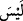
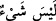
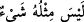

hiçbir sıfat da yoktur. Sadece lafız bakımından bir uyum olabilir. Kadim zâtın (Allah’ın)
hâdis olan zâta (sonradan yaratılmış olana) misl ve benzer olması tamamen muhal olup
kesinlikle imkânsızdır. Yine hâdis olan zâtın kadim sıfatı olamayacağı gibi kadim olan
zâtın da hâdis sıfatının olması muhal ve imkânsızdır.
Şâir der ki:
Senin zâtını onun sûretine bağladılar,
(Bu sebeple) sen herkes, herkes de senin gibidir.
Bir diğeri de şöyle der:
Müheymin olan zât hakîkati idrak edilmekten çok yücedir.
Misli olmayınca mesel yapılamaz.
Mesnevi’de şöyle denmiştir:
Onun zâtını tasavvur edebilecek genişlik/kâbiliyet nerede?
Tâ ki O’nun gibisi düşünce sahasına girebilsin, düşünülebilsin…
Muhakkık âlimlerin görüşleri bu istikamettedir. Diğer müfessir ve âlimlere göre ise
meşhur olan görüş şudur: Burada
fiilinin haberinde olan
zâiddir.
’nin
ismidir. İbârenin takdiri
şeklinde olup “Allah gibi hiçbir şey yoktur”
demektir. Şâyet böyle izah edilmezse bu sefer mânâ “Allah’ın benzerinin benzeri
yoktur” demek olur ki bu muhaldir.
Bazıları şöyle demiştir: “Kâf”ın zâit olduğunu söyleyenler bundan, “Allah’ın benzeri
yoktur” mânâsını murad etmişlerdir. Ki elbette bu mânâ daha kuvvetlidir. Çünkü daha
önce de zikredildiği üzere “misline benzer yoksa zâtına benzeyen zâten olmayacaktır.”
Bazı âlimler de şöyle demiştir: Burada “misl” kelimesi zâiddir. Mânâ: “O’nun zâtı
gibi hiçbir şey yoktur” demektir. Kâf’ın zamirlere dâhil olması câiz değildir. Bu
durumda kinâye yoluna gitmek daha uygun düşmektedir. Zîrâ faydası büyük, mânâsı
makbûl ve belîğ olan şeyin zâid olduğunu söylemek tamamen uzak bir yorumdur.
Bahru’l-ulum’da şöyle denmiştir: Şu husûsun farkında olmalıdır ki “misl” bazı
sıfatlarda eşitliktir. Bazı muhakkık âlimlerın iddiâ ettiği gibi bütün sıfatlarda eşitlik
değildir. Bu iddiâ bir yanılgıdır. Nitekim “De ki: Ben de sizin gibi bir insanım,
ilahınızın bir tek ilah olduğu bana vahyolunuyor ” (el-Kehf, 18/110) âyeti bu husûsa
delildir. Evet, bu âyette Peygamber (a.s.)’ın insanlara olan benzerliği sâbittir. Eşitlik
yalnız “beşeriyet: insan olma” vasfındadır; bütün vasıflarda değil. Bu husus zâten
bellidir. Çünkü peygamberlerle diğer insanlar arasında birçok yönden farklılık olduğu
kesindir. Meselâ; nübüvvet (peygamberlik), risâlet (elçilik), vahiy ve daha başka
durumlar bâriz farklılıklardır. “Bana vahyolunuyor” sözüne bakılırsa bu farklılığı nasıl